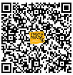

Participe ajudando presencialmente ou online no projeto.
Nosso Impacto
+120
Animais resgatados
+80
Adoções realizadas
+300
Doadores ativos
Para cuidar dos primatas, o Projeto Mucky depende da contribuição de pessoas solidárias como você. Escolha uma das formas de pagamento abaixo e faça a sua doação.

O Programa de Ecovoluntariado do Projeto Mucky está suspenso para reformulações e melhorias internas. Ainda não temos data prevista para retorno, divulgaremos em nossas redes sociais quando ele for reativado. Siga o Projeto Mucky no Instagram e acompanhe as notícias da Instituição.